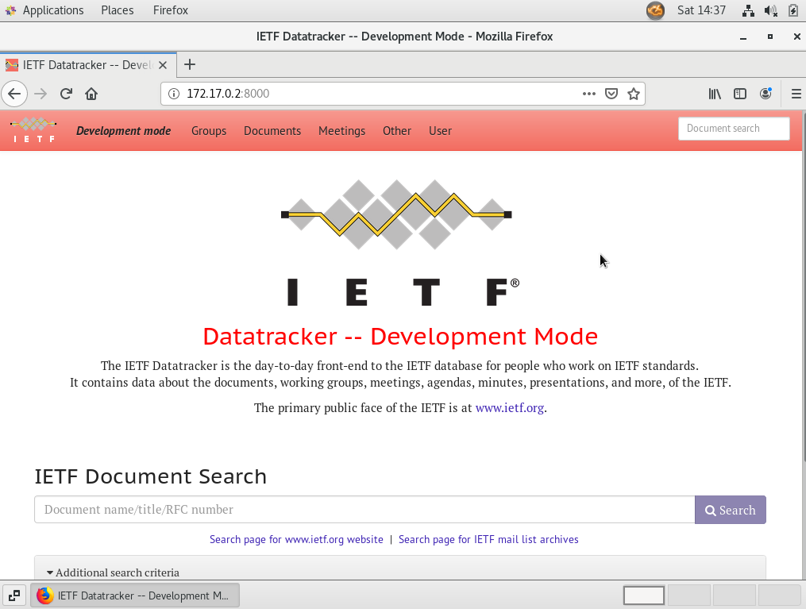

IETF Datatracker Environment Setup

Prerequisites
- Linux host machine (i.e. Ubuntu 18.04)
- Vagrant (i.e. 2.9.9)
- VirtualBox (i.e. 6.1.12)
Find the original log of my setup here.
Overview
The steps are:
- Use Vagrant to boot up a VM
- Install GUI on the VM
- Install Docker on the VM
- Install SVN
- Check out the branch
- Set up database
- Set up virtual environment
- Run the tests
- Start the Development Server
- Mailserver and Rsync Data
Step 1: Use Vagrant to boot up a VM
Put the below Vagrantfile into working directory and execute ‘Vagrant up’. Vagrantfile
Step 2: Install GUI on the VM
Ssh to the VM,
vagrant ssh
then use the below commands to intall GUI on the VM.
sudo yum -y groupinstall "GNOME Desktop"
echo "exec gnome-session" >> ~/.xinitrc
systemctl set-default graphical.target
Use command
startx
in VirtualBox console to start the GUI.
Step 3: Install Docker on the VM
Install docker and start the service.
sudo yum -y install docker
sudo systemctl status docker
sudo systemctl start docker
sudo systemctl enable docker
Create user group ‘docker’ and add you into the group.
sudo groupadd docker
sudo usermod -aG docker $(whoami)
sudo usermod -aG docker vagrant
Reevaluate the group and restart the docker service.
logout
sudo systemctl restart docker
Check if you can run docker commands without sudo.
docker info
Step 4: Install SVN
Add the repository and install SVN.
sudo vim /etc/yum.repos.d/wandisco-svn.repo
[WandiscoSVN] name=Wandisco SVN Repo baseurl=http://opensource.wandisco.com/centos/$releasever/svn-1.8/RPMS/$basearch/ enabled=1 gpgcheck=0
sudo yum remove subversion*
sudo yum clean all
sudo yum install subversion
svn --version
Step 5: Check out the branch
UTF-8 settings:
export LC_ALL=C
sudo vi .bashrc
Add below to the file ~/.bashrc
LANG=en_US.UTF-8 export LANG
Change SELinux settings, so that docker image can access your home directory.
chcon -Rt svirt_sandbox_file_t /home/vagrant/
Checkout the branch
mkdir -p ietf
cd ietf
svn co https://svn.tools.ietf.org/svn/tools/ietfdb/personal/flycoolman/7.10.1.dev0
Step 6: Set up database
cd 7.10.1.dev0/
./docker/setupdb
Step 7: Set up virtual environment
./docker/run
[FAIL] rsyslogd is not running … failed!
In virtual environment of the container
pip install --upgrade -r requirements.txt
./ietf/manage.py migrate
The below operation might be needed if the migration fails.
sudo cp docker/settings_local.py ietf/
Then run the migrate command again.
Step 8: Run the tests
In the virtual environment to run the tests:
./ietf/manage.py test –settings=settings_sqlitetest
Step 9: Start the Development Server
./ietf/manage.py runserver 0.0.0.0:8000 &
Test the access to datatracker.

Step 10: Mailserver and Rsync Data
Go to the original page for details about:
Setup Complete
For other workflow things, please refer to the original setup guide.
Links
How To Install and Use Docker on CentOS 7
How to fix docker: Got permission denied while trying to connect to the Docker daemon socket
How to Install Subversion (SVN) 1.8.19 on CentOS/RHEL 7/6/5
Sprint Coder Setup
How to install a GUI on top of CentOS 7
SprintCoderSetupTroubleshooting
Upgrade to VirtualBox 6.1 and Vagrant 2.9.9 on Ubuntu 18.04